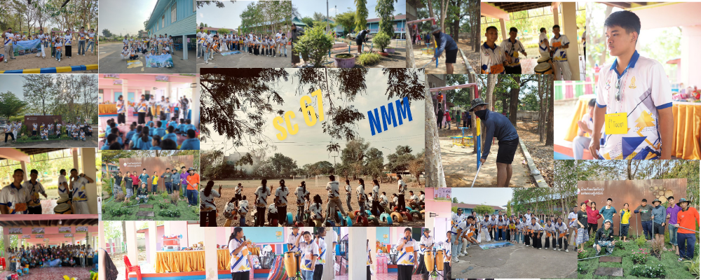
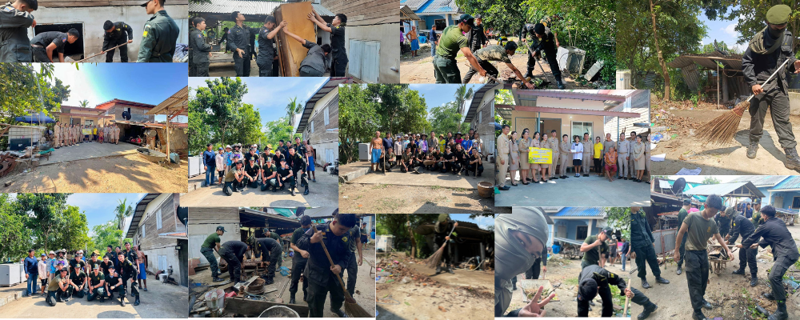
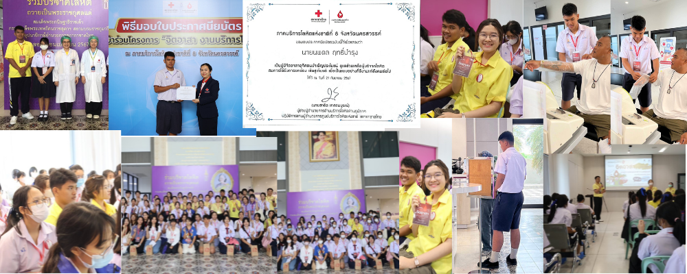
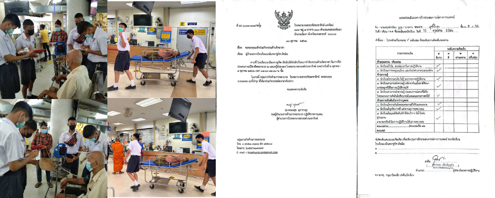
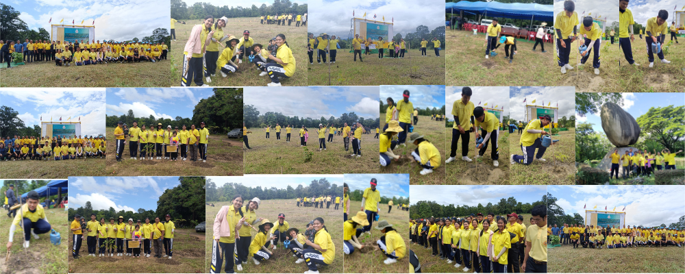
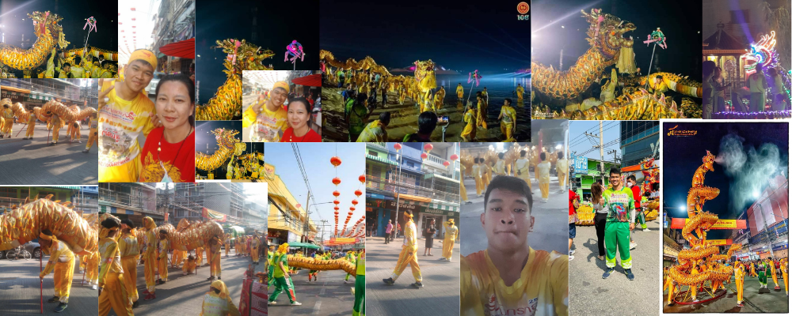

My Portfolio
HOME
Select Work
Academics
Robot
Program
Camp
Valunteer
Hobby
CONTACT
ABOUT ME
volunteer
กิจกรรมสภานักเรียน
"สายลมห่มหนาว"

กิจกรรมสายลมห่มหนาว จัดขึ้นเป็นเวลา2วัน1คืน เป็นกิจกรรมของคณะกรรมการสภานักเรียนที่จัดขึ้นทุกปี เพื่อช่วยเหลือน้องๆที่คลาดเเคลนในเรื่องอุปกรณ์การเรียน สภาพเเวดล้อมในการเรียน ผมหนึ่งในคณะกรรมการสภานักเรียนโรงเรียนนวมินทราชูทิศ มัชฌิม ได้มาเข้าร่วมกิจกรรมนี้กับเพื่อนสภานักเรียนด้วย ผมได้ทั้งประสบการณ์ในการวางเเผนการทำงาน การทำงานเป็นทีม เเละการช่วยเหลือผู้อื่น อีกทั้งพวกเรายังมีการจัดกิจกรรมต่างๆเพื่อให้น้องๆ ได้เข้ามาร่วมสนุกกันครับ เกลาข้อความนี้ให้ดีขึ้น
ดูรายละเอียดเพิ่มเติม
กิจกรรมนักศึกษาวิชาทหาร
"สร้างบ้านให้น้องที่ขาดเเคลน"

กิจกรรมนี้เป็นอีกหนึ่งประสบการณ์ที่ผมรู้สึกภูมิใจและอยากเล่ามากที่สุดเลยครับ ผมได้รับหน้าที่ในการ เคลียร์พื้นที่ เพื่อเตรียมสำหรับการสร้างบ้านหลังใหม่ให้น้อง ซึ่งอาจฟังดูเหมือนเป็นแค่จุดเริ่มต้นเล็ก ๆ แต่จริง ๆ แล้วเป็นส่วนที่สำคัญมาก เพราะถ้าไม่มีพื้นที่ที่พร้อม ก็ไม่สามารถเริ่มสร้างได้เลย แม้ว่าผมจะไม่ได้เป็นคนตอกตะปู วางหลังคา หรือบริจาคเงินจำนวนมาก แต่ผมก็ทุ่มเทแรงกายและแรงใจเต็มที่ เพื่อให้น้องได้มีบ้านหลังใหม่ที่อบอุ่น มันเป็นงานที่เหนื่อยก็จริง แต่ความรู้สึกดีที่ได้ทำเพื่อคนอื่น มันทำให้ผมมีความสุข และอยากนำเสนอสิ่งนี้การเป็ฯจิตอาสาในครั้งนี้มากเลยครับ ผมรู้สึกภูมิใจจริงๆ
ดูรายละเอียดเพิ่มเติม
กิจกรรมจิตอาสา
"จิตอาสาสภากาชาดไทย"

ผมเห็นประกาศรับสมัครจิตอาสาผ่านทางเพจของสภากาชาดไทย และด้วยความที่ ผมไม่เคยมีความรู้เรื่องการบริจาคเลือดมาก่อนเลย ผมจึงรู้สึกสนใจทันที เพราะเคยมีประสบการณ์ไปบริจาคเลือดกับคุณพ่อ แล้วได้เห็นการทำงานของพี่ ๆ เจ้าหน้าที่อย่างใกล้ชิด ซึ่งมันดูน่าสนใจมากครับ ผมเลยตัดสินใจสมัครเข้าร่วม เพราะอยากรู้ว่าเบื้องหลังการทำงานเป็นอย่างไร และอยากพิสูจน์ตัวเองด้วยว่า ผมจะชอบงานแบบนี้หรือเปล่า และคำตอบก็คือ... ไม่ครับ! ผมกลัวเลือดมาก 555 แต่ถึงแม้จะกลัว ผมก็ยังได้ลองเข้าไปในห้องบริจาค และช่วยงานในส่วนของการ ต้อนรับและให้บริการกับผู้ที่มาบริจาคเลือด แทน กิจกรรมนี้สนุกมากครับ ได้ช่วยงานพี่ ๆ เจ้าหน้าที่ ได้เจอเพื่อนใหม่ที่มีเป้าหมายอยากเข้าสายสุขภาพ และที่สำคัญที่สุดคือ ผมได้รู้จักตัวเองมากขึ้น ว่างานแบบไหนที่ใช่และไม่ใช่สำหรับเรา ถึงแม้งานครั้งนี้จะไม่ตรงทาง แต่เป็นอีกหนึ่งกิจกรรมที่ผมรู้สึกดีใจที่ได้ลองครับ
ดูรายละเอียดเพิ่มเติม
กิจกรรมจิตอาสา
"จิตอาสาโรงพยาบาลสวรรค์ประชารักษ์"

กิจกรรมนี้เป็นจุดที่ทำให้ผมได้ “ลอง” และ “รู้จักตัวเอง” มากขึ้นครับ ตอนนั้นเป็นช่วงปิดเทอม ผมกับเพื่อน ๆ อยากใช้เวลาให้เกิดประโยชน์ เลยตัดสินใจไปทำจิตอาสาที่โรงพยาบาลสวรรค์ประชารักษ์กัน ในตอนแรกผมก็รู้สึกตื่นเต้น เพราะอยากรู้ว่าการทำงานในโรงพยาบาลจริง ๆ เป็นยังไง แต่พอได้ลองทำจริง ๆ ผมก็เริ่มรู้สึกว่า มันไม่ใช่แนวทางของตัวเองเลยครับ ทั้งบรรยากาศ ความเงียบ ความกดดัน รวมถึงงานบางอย่างที่ต้องใช้ความละเอียดและใจเย็นมาก ซึ่งไม่ใช่จุดแข็งของผมเลย แต่ถึงจะไม่ใช่งานที่ผมถนัด ผมก็ยังดีใจที่ได้ลองครับ เพราะมันทำให้ผมรู้จักตัวเองมากขึ้น การกล้าลอง และกล้ายอมรับว่า “ไม่ใช่” ก็เป็นก้าวสำคัญในการเติบโตเหมือนกัน
กิจกรรมสภานักเรียน
"ปลูกป่า"

กิจกรรมปลูกป่า เป็นกิจกรรมของคณะกรรมการสภานักเรียนครับ เป็นกิจกรรมช่วงปิดเทอมได้ทำการไปปลูกป่าที่จ.อุทัยธานี
ดูรายละเอียดเพิ่มเติม
ประเพณีตรุษจีน นครสวรรค์
"เเห่มังกรทองจ้าวพ่อจ้าวเเม่ปากน้ำโพ"

ผมได้มีโอกาสเล่นมังกรของคณะมังกรทองเจ้าพ่อเจ้าแม่ปากน้ำโพ ซึ่งเป็นคณะมังกรที่ใหญ่ที่สุดและเป็นคณะแรกของประเทศไทยครับ ถ้าถามว่าทำไมถึงไปเล่น? ก็เพราะอยากลองครับ ผมอยากรู้ว่ามันเป็นยังไง เลยลงมือทำทันที เป็นประสบการณ์ที่ท้าทายตัวเองมาก ๆ ทั้งเหนื่อยมาก ๆ สนุกมาก ๆ และได้เจอเพื่อนใหม่เยอะมากครับ เหตุผลที่ผมเลือกกิจกรรมนี้มาใส่ในหมวดจิตอาสา เพราะปีนั้นมีคนเล่นน้อยกว่าจำนวนที่ต้องการมาก ทำให้คนที่ไปเล่นต้องเหนื่อยเป็นสองเท่าจากเดิมเลยครับ แต่ก็ชดเชยด้วยเบี้ยเลี้ยงที่เพิ่มขึ้น... 555 แต่อย่างไรก็ตาม เรื่องนั้นไม่ใช่ประเด็นหลักครับ เพราะใจผมคือไปเล่นเพื่ออากงอาม่าที่ผมนับถืออยู่แล้วครับ
ดูรายละเอียดเพิ่มเติม